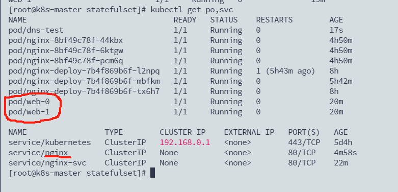

k8s Resources Schedule
相关概念
- Deployment: 部署包含RS、创建RS和pod，对应用程序进行滚动更新/滚动、动态扩缩容等 （RS:111）
- RS(ReplicaSet): 副本集，管理Pod副本扩容/缩容
- Selector: 查询器，相当于查询条件：type=xxx,name!=xxxx
- StatefulSet : 专门对有状态服务进行部署的一个控制器
一. Label&Selector Usage
Label
临时创建标签
查看pod的标签
[root@k8s-master pods]# kubectl get po --show-labels
NAME READY STATUS RESTARTS AGE LABELS
my-nginx 1/1 Running 0 3m10s app=hello,type=app,version=1.0.x
修改已存在的标签
Selector
配置文件
在各对象的配置 spec.selector 或其他可以写 selector 的属性中编写
kubectl
匹配单个值，查找 app=hello 的 pod
匹配多个值 或查找 version!=1 and app=nginx 的 pod 信息 不等值 + 语句二. Deployment Usage
Ⅰ. 功能
创建资源
命令行创建一个 deployment
kubectl create deploy nginx-deploy --image=nginx:1.26.0
#也可以后面加 -o yaml 以yaml格式把内容输出，并创建资源
#也可以后面加 -o yaml > xxx.yaml 以yaml格式把内容输出到xxx.yaml文件，并创建资源
[root@k8s-master deployments]# kubectl get deploy
NAME READY UP-TO-DATE AVAILABLE AGE
nginx-deploy 1/1 1 1 2m4s
[root@k8s-master deployments]# kubectl get replicaset
NAME DESIRED CURRENT READY AGE
nginx-deploy-744cbf6b5c 1 1 1 2m8s
[root@k8s-master deployments]# kubectl get pod
NAME READY STATUS RESTARTS AGE
my-nginx 1/1 Running 0 71m
nginx-deploy-744cbf6b5c-kl48m 1/1 Running 0 2m12s
[root@k8s-master deployments]#
Tip
通过查询注意到，通过deployment创建的资源，pod name，rs name ，deployment name 三者有对应的关系。
滚动更新
只有修改了 k8s集群的 deployment 配置文件中的 template 中的属性后，才会触发更新操作
[root@k8s-master deployments]# kubectl get deploy
NAME READY UP-TO-DATE AVAILABLE AGE
nginx-deploy 1/1 1 1 29m
[root@k8s-master deployments]# kubectl edit deploy nginx-deploy
修改 nginx 版本号
kubectl set image deployment/nginx-deployment nginx=nginx:1.9.1
#或者通过 kubectl edit deployment/nginx-deployment 进行修改
查看滚动更新的过程
查看部署描述，最后展示发生的事件列表也可以看到滚动更新过程
-
通过 kubectl get deployments 获取部署信息，UP-TO-DATE 表示已经有多少副本达到了配置中要求的数目
-
通过 kubectl get rs 可以看到增加了一个新的 rs
-
通过 kubectl get pods 可以看到所有 pod 关联的 rs 变成了新的
多个滚动更新并行
- 假设当前有 5 个 nginx:1.7.9 版本，你想将版本更新为 1.9.1，当更新成功第三个以后，你马上又将期望更新的版本改为 1.9.2，那么此时会立马删除之前的三个，并且立马开启更新 1.9.2 的任务
回滚
有时候你可能想回退一个Deployment，例如，当Deployment不稳定时，比如一直crash looping。
默认情况下，kubernetes会在系统中保存前两次的Deployment的rollout历史记录，以便你可以随时会退（你可以修改revision history limit来更改保存的revision数）。
案例： 更新 deployment 时参数不小心写错，如 nginx:1.9.1 写成了 nginx:1.91
监控滚动升级状态，由于镜像名称错误，下载镜像失败，因此更新过程会卡住
结束监听后，获取 rs 信息，我们可以看到新增的 rs 副本数是 2 个 通过 kubectl get pods 获取 pods 信息，我们可以看到关联到新的 rs 的 pod，状态处于 ImagePullBackOff 状态为了修复这个问题，我们需要找到需要回退的 revision 进行回退,通过:
可以获取 revison 的列表通过:
可以查看详细信息确认要回退的版本后，可以通过:
可以回退到上一个版本,也可以回退到指定的 revision: 再次通过: 可以看到，我们的版本已经回退到对应的 revison 上了通过设置 .spec.revisonHistoryLimit 来指定 deployment 保留多少 revison，如果设置为 0，则不允许 deployment 回退了。
扩容缩容
通过 kube scale 命令可以进行自动扩容/缩容，以及通过 kube edit 编辑 replcas 也可以实现扩容/缩容
扩容与缩容只是直接创建副本数，没有更新 pod template 因此不会创建新的 rs
暂停与恢复
由于每次对 pod template 中的信息发生修改后，都会触发更新 deployment 操作，那么此时如果频繁修改信息，就会产生多次更新，而实际上只需要执行最后一次更新即可，当出现此类情况时我们就可以暂停 deployment 的 rollout
通过 kubectl rollout pause deployment <name> 就可以实现暂停，直到你下次恢复后才会继续进行滚动更新
尝试对容器进行修改，然后查看是否发生更新操作了
kubectl set image deploy
通过以上操作可以看到实际并没有发生修改，此时我们再次进行修改一些属性，如限制 nginx 容器的最大cpu为 0.2 核，最大内存为 128M，最小内存为 64M，最小 cpu 为 0.1 核
kubectl set resources deploy
通过格式化输出 kubectl get deploy
那么此时我们再恢复 rollout，通过命令 kubectl rollout deploy
恢复后，我们再次查看 rs 和 po 信息，我们可以看到就开始进行滚动更新操作了 kubectl get rs kubectl get po
配置文件
apiVersion: apps/v1 # deployment api 版本
kind: Deployment # 资源类型为 deployment
metadata: # 元信息
labels: # 标签
app: nginx-deploy # 具体的 key: value 配置形式
name: nginx-deploy # deployment 的名字
namespace: default # 所在的命名空间
spec:
replicas: 1 # 期望副本数
revisionHistoryLimit: 10 # 进行滚动更新后，保留的历史版本数
selector: # 选择器，用于找到匹配的 RS
matchLabels: # 按照标签匹配
app: nginx-deploy # 匹配的标签key/value
strategy: # 更新策略
rollingUpdate: # 滚动更新配置
maxSurge: 25% # 进行滚动更新时，更新的个数最多可以超过期望副本数的个数/比例
maxUnavailable: 25% # 进行滚动更新时，最大不可用比例更新比例，表示在所有副本数中，最多可以有多少个不更新成功
type: RollingUpdate # 更新类型，采用滚动更新
template: # pod 模板
metadata: # pod 的元信息
labels: # pod 的标签
app: nginx-deploy
spec: # pod 期望信息
containers: # pod 的容器
- image: nginx:1.7.9 # 镜像
imagePullPolicy: IfNotPresent # 拉取策略
name: nginx # 容器名称
restartPolicy: Always # 重启策略
terminationGracePeriodSeconds: 30 # 删除操作最多宽限多长时间
三. StatefulSet

功能
创建
kubectl create -f web.yaml
# 查看 service 和 statefulset => sts
kubectl get service nginx
kubectl get statefulset web
# 查看 PVC 信息
kubectl get pvc
# 查看创建的 pod，这些 pod 是有序的
kubectl get pods -l app=nginx
# 查看这些 pod 的 dns
# 运行一个 pod，基础镜像为 busybox 工具包，利用里面的 nslookup 可以看到 dns 信息
kubectl run -i --tty --image busybox dns-test --restart=Never --rm /bin/sh
nslookup web-0.nginx
访问容器
像docker一样用命令简单创建一个容器：
访问其他容器： 
{kind=link}
[root@k8s-master statefulset]# kubectl run -it --image busybox dns-test --restart=Never --rm /bin/sh
/ # ping web-1.nginx #验证容器间访问
PING web-1.nginx (192.168.36.100): 56 data bytes
64 bytes from 192.168.36.100: seq=0 ttl=62 time=0.327 ms
64 bytes from 192.168.36.100: seq=1 ttl=62 time=0.289 ms
...
/ # ping web-0.nginx #验证容器间访问
PING web-0.nginx (192.168.169.161): 56 data bytes
64 bytes from 192.168.169.161: seq=0 ttl=63 time=0.051 ms
64 bytes from 192.168.169.161: seq=1 ttl=63 time=0.051 ms
注释：
- dns-test : 容器名称
- busybox : linux的常用工具镜像
- --restart=Never: 当探测到容器失败是否重启 POD
- --rm : 运行完后删除容器
- /bin/sh： 进入容器的目录（执行bin目录下的sh）
扩容缩容
# 扩容
$ kubectl scale statefulset web --replicas=5
# 缩容2种方法
$ kubectl scale sts web --replicas=2
$ kubectl patch statefulset web -p '{"spec":{"replicas":3}}'
镜像更新
# 镜像更新（目前还不支持直接更新 image，需要 patch 来间接实现）
kubectl patch sts web --type='json' -p='[{"op": "replace", "path": "/spec/template/spec/containers/0/image", "value":"nginx:1.9.1"}]'
RollingUpdate
StatefulSet 也可以采用滚动更新策略，同样是修改 pod template 属性后会触发更新，但是由于 pod 是有序的，在 StatefulSet 中更新时是基于 pod 的顺序倒序更新的
查看rolling 状态
[root@k8s-master statefulset]# kubectl rollout status sts web
partitioned roll out complete: 2 new pods have been updated...
灰度发布(金丝雀)
利用滚动更新中的 partition 属性，可以实现简易的灰度发布的效果
例如我们有 5 个 pod，如果当前 partition 设置为 3，那么此时滚动更新时，只会更新那些 序号 >= 3 的 pod
利用该机制，我们可以通过控制 partition 的值，来决定只更新其中一部分 pod，确认没有问题后再主键增大更新的 pod 数量，最终实现全部 pod 更新
Statefulset的滚动更新是先删除再创建
下面是先删除再创建的原因：
数据的持久性：有状态应用程序通常使用持久卷（Persistent Volume）来存储数据。在进行更新时，先删除旧的 Pod，可以确保旧 Pod 使用的持久卷不会被意外删除，从而保留数据的持久性。
网络标识的稳定性：StatefulSet 的每个 Pod 都有唯一的标识符和稳定的网络标识。这些标识符通常基于 Pod 的名称和索引。通过先删除旧的 Pod，再创建新的 Pod，可以保证新 Pod 的名称和索引与旧 Pod 保持一致，从而保持网络标识的稳定性。
依赖关系的管理：在有状态应用程序中，可能存在依赖其他 Pod 的情况，例如数据库集群中的主从关系。通过先删除再创建的方式，可以确保新创建的 Pod 在依赖关系方面与旧 Pod 保持一致，避免因更新过程中引入不一致性。
OnDelete
只有在 pod 被删除时会进行更新操作
删除
# 删除 StatefulSet 和 Headless Service
# 级联删除：删除 statefulset 时会同时删除 pods
kubectl delete statefulset web
# 非级联删除：删除 statefulset 时不会删除 pods，删除 sts 后，pods 就没人管了，此时再删除 pod 不会重建的
kubectl deelte sts web --cascade=false
# 删除 service
kubectl delete service nginx
删除pvc
配置文件
---
apiVersion: v1
kind: Service
metadata:
name: nginx
labels:
app: nginx
spec:
ports:
- port: 80
name: web
clusterIP: None
selector:
app: nginx
---
apiVersion: apps/v1
kind: StatefulSet
metadata:
name: web
spec:
serviceName: "nginx" #使用哪个service 来管理dns
replicas: 2
template:
metadata:
labels:
app: nginx
spec:
containers:
- name: nginx
image: nginx:1.7.9
ports:
- containerPort: 80 #容器内部要暴露的端口
name: web #该端口的名字
volumeMounts:
- name: www #指定加载哪个数据卷
mountPath: /usr/share/nginx/html #加载到容器的哪个目录
volumeClaimTemplates: # 数据卷模板
- metadata: #数据卷描述
name: www #数据卷名称
annotations: #数据卷注释
volume.alpha.kubernetes.io/storage-class: anything
spec: #数据卷的规约
accessModes: [ "ReadWriteOnce" ] #访问模式
resources:
requests:
storage: 1Gi #存储大小